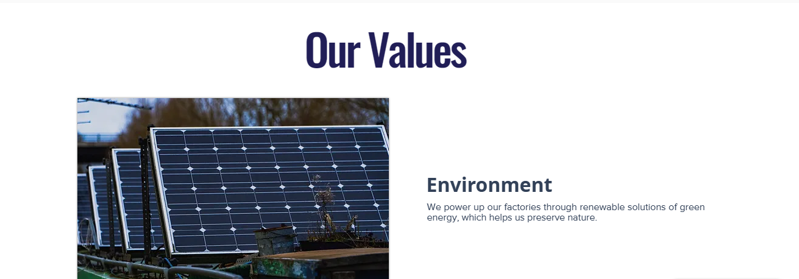
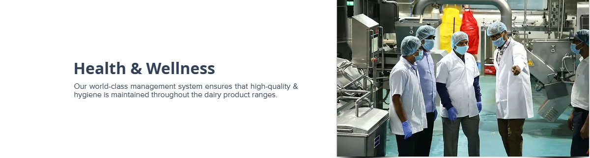
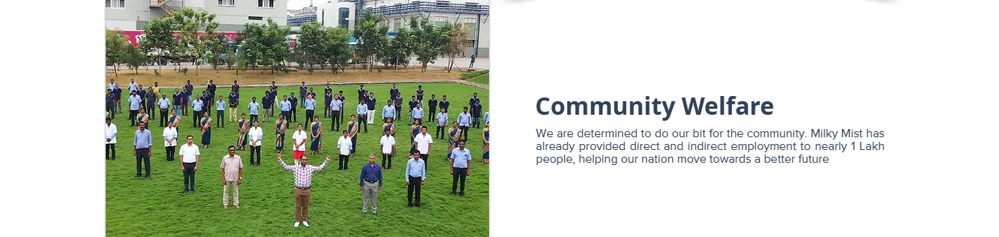

Milky Mist Dairy Food Private Limited is a name you will often hear when you talk about the best dairy brand in Tamil Nadu & other Southern states of India. We are based at Chittode near Erode, Tamil Nadu & our premium quality dairy products have helped us spread our name throughout the nation. Our products have set a benchmark in the dairy industry, making us the top brand in India for dairy products. A few factors that set us apart from others are: Premium Quality (which is maintained throughout our product ranges) World-Class Packaging Consumer Reach Throughout India Our journey began as the best paneer brand & then we became a 100% product company and the only dairy in India to convert all the milk procured into value-added products. We have developed a state-of-the-art dairy plant where 150+ SKUs of ‘Milky Mist’ quality dairy products are processed across 20 categories.
  